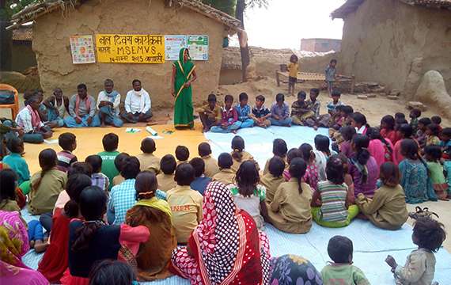
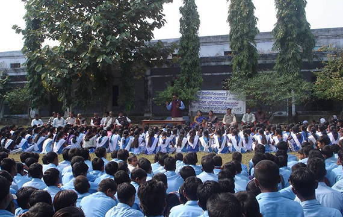
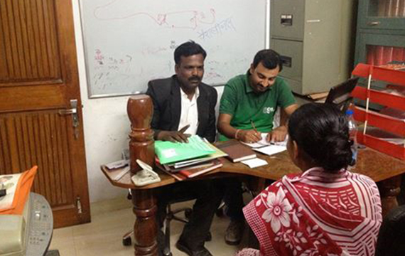
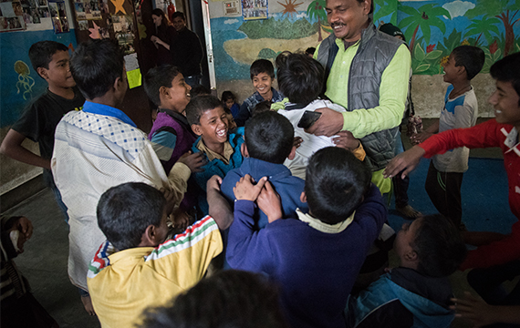
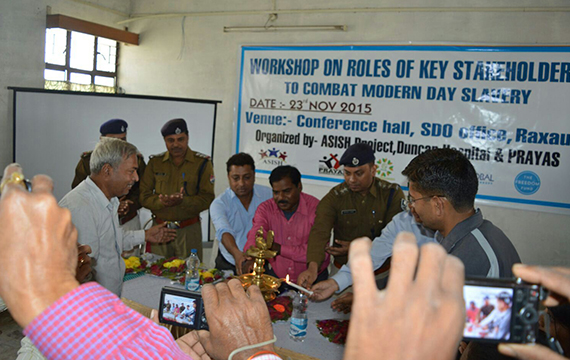
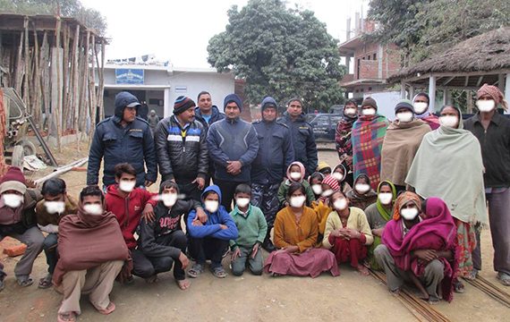

Help us save the girls!Do your bit to make a change.Help us make the world a better place.Uniting the masses to bring a change for the women
WHO WE ARE
Guria is non-profit organization that is both dedicated to fighting child prostitution, second generation
prostitution, and sex trafficking in Northern India, and to achieving freedom worldwide.
A FEW FACTS ABOUT HUMAN TRAFFICKING:
According to a 2016 estimate by the Global Slavery Index, there are 45.8 million individuals
involved in
some form of modern slavery. Out of these, more than 18 million (highest in the world) people are
living in
conditions of modern slavery in India (Global Slavery Index 2016)
Globally, human trafficking is the second largest - and fastest growing - criminal industry in the
world.
(Polaris Project)
800,000 people, 80% women, are trafficked internationally every year. (The 2014 U.S. TIP Report)
Over 4.5 million individuals worldwide are victims of forced commercial sexual exploitation. (ILO
Report,
2014)
Human trafficking earns profits of roughly $150 billion a year for traffickers. $99 billion of that
is from
commercial sexual exploitation. (ILO Report, 2014)
According to the 2015 State Department Trafficking in Persons (TIP) report, there were only 10,051
prosecutions and 4,443 convictions for trafficking globally in 2014. (The 2014 U.S. TIP Report)
75% to 77% victims enter the sex trade through trafficking (Report: Girls and women in prostitution
in
India, Supported by Department of Women and Child Development, Govt. Of India)
Only 0.15% (i.e. 1 in every 700) victims are ever identified ( US TIP Report 2012)
AREAS OF INTERVENTION
Guria has strived to intervene in various sectors to achieve our primary goal of rescuing women and
achieving a place safe for women. Through the various activities Guria, has become successful in
achieving the
goals. READ MORE
ACTIVITIES HIGHLIGHTS
Through our various interventions regarding prevention, protection, prosecution and rehabilitation we
strive
towards providing a safe haven for the victims of flesh trade by helping them rebuild their lives.

COMMUNITY MOBILIZATION
We at Guria believe that to achieve sustainability for both the survivors and this movement against
child trafficking and sexual exploitation, we need peoples’ ownership and participation at source,
transit,
and destination levels while dealing with the issue of slavery. To
ensure this, we use various tools
to reach people, including village meetings, availing government entitlements at vulnerable
source
areas, awareness campaigns through street plays and folk songs, foot and cycle marches to spread
an
understanding of human trafficking into the vulnerable families and communities. Such actions
together convert into strong disciplined womens’ groups/vigilance committees which take self
ownership and leadership to prevent further trafficking

CAMPAIGNS IN SCHOOLS
Children, being the youngest section of the society, are easiest to mould and make the best
messengers of social issues. By making the children aware, we also create awareness in their
families and neighbours
about the trafficking and exploitation. This is done through organizing
various competitions like painting,
essay writing and quiz
competitions.

LEGAL INTERVENTIONS
Guria as an NGO that is dedicated towards prevention of human trafficking realises that merely
carrying out rescue operations or charity work for the victims will not be effective in combating
human trafficking.
Guria has taken legal action thereby breaking up the criminal nexus through bail rejections of
traffickers, victim/witness protection, mock trials, opposing custody of victims, brothel
seizures, and convictions, etc. It is only legal intervention that will ensure the logical
conclusion of our holistic approach, ensure a proper deterrence and set a precedent within
society.

BAK KENDRA
In order to prevent second generation prostitution, Guria works towards providing basic literacy to
the children of the red light areas in and around Varanasi, along with meals. In these centres a lot
of post traumatic therapy...
children of the red light areas in and around Varanasi along with meals. In these centres a
lot of
post traumatic therapy is conducted to help the kids rise above their painful past through various
forms of art, music and dance. Across 4 educational centres, Guria is supporting over 350 children.

ADVOCACY CAMPAIGNS
Guria has garnered support from the national agencies on human rights like National Human Rights
Commision, National Commission for Women, National Commission for Protection of Child Rights in the
cases related to sex trafficking,
child prostitution and rape. Guria also launched a worlwide campaign against human
trafficking titled
“Freedom Now” (freedomnowcampaign.org), organized cultural events by marginalized folk artists and
also shows its potential by organizing sensitization meetings of over 25,000 women every year
against the rising crimes of child prostitution, rape and sex trafficking.

RESCUE
Part of our larger, holistic approach to combating human trafficking is to rescue women and children
from being trafficked for sex and labour. Over the years, Guria has successfully rescued more than
2000 persons from the clutches of slavery.